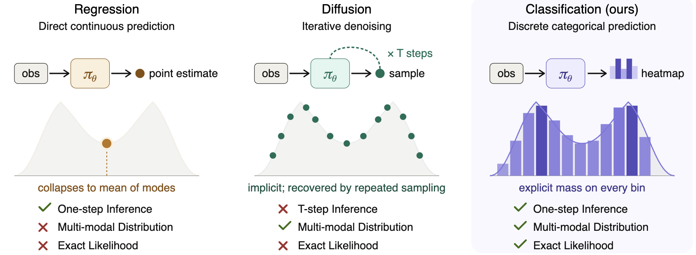
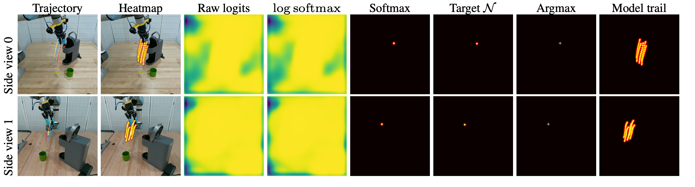

Robotics · Manipulation Policy Learning
Action Map Policy: Learning 3D Closed-loop Manipulation via Pixel Classification
Recasting 3D closed-loop manipulation as a dense classification problem on the image plane: single-pass, multi-modal, and grounded in the scene.
A new path toward learning language, vision, and action jointly. The success of large language models has revealed a clear scaling law for one-dimensional sequence data, driven by autoregressive training under a cross-entropy objective. Extending this recipe directly to robot learning is not straightforward: it is far from obvious how to autoregressively infer the next action distribution over a temporal horizon. The core difficulty is that actions are inherently high-dimensional — at least 6 or 7 degrees of freedom (including the gripper) at every step of the horizon. Action Map Policy tackles this by recasting 3D closed-loop manipulation as a dense classification problem, yielding a method whose training objective is naturally compatible with that of LLMs and VLMs.
Overview
Why this policy is different
Action Map Policy (AMP) casts 3D closed-loop manipulation as pixel classification. Rather than regressing a single action or running an iterative denoiser, AMP predicts a dense heatmap over several calibrated views and reads actions directly off the activated pixels.

Experiments · Real robot
General policy-learning performance
We evaluate AMP on three long-horizon, high-precision, contact-rich tasks and compare against strong regression and diffusion baselines.
| Method | # Demos | Speed | Coffee | Toast | Egg |
|---|---|---|---|---|---|
| DiffPo DDIM | 70 | 93.53 ms | 25% (5/20) | 40% (8/20) | 25% (5/20) |
| ACT | 70 | 7.16 ms | 15% (3/20) | 35% (7/20) | 15% (3/20) |
| Action Map Policy | 70 | 13.80 ms | 80% (16/20) | 90% (18/20) | 85% (17/20) |
Success over 20 real-robot trials. Bold marks the best result in each column; speed is end-to-end latency, detailed below.
AMP runs at 13.80 ms end-to-end, timed from receiving the observation to emitting the full trajectory command, not just the model forward pass, on a single NVIDIA RTX 3090. The SVD-based triangulation step adds non-negligible overhead and can be optimized further.
Action representation
The new robot action paradigm: a dense action map for closed-loop 3D learning
How actions are represented decides how a policy learns from the physical world. Action Map Policy introduces a new paradigm: a dense action representation that casts closed-loop 3D manipulation as heatmaps over the image plane, turning policy learning into classification.

Spatial reasoning
Grounded in pixels, responsive to small cues
Because each input pixel maps to an action prediction, the policy stays grounded in the spatial structure of the scene and can exploit fine-grained, pixel-level cues.
We test this with several identical objects where only a laser pointer marks the target. AMP follows the cue reliably while a diffusion policy ignores it, so the policy can act on small but task-critical signals.
| Method | # Demos | stack-target-cup | stack-target-block |
|---|---|---|---|
| DiffPo DDIM | 40 | 25% (5/20) | 15% (3/20) |
| ACT | 40 | 75% (15/20) | 65% (13/20) |
| Action Map Policy | 40 | 100% (20/20) | 100% (20/20) |
Success over 20 real-robot trials. Bold marks the best result in each column.
Reference
Citation
@article{huang2026action, title={Action Map Policy: Learning 3D Closed-loop Manipulation via Pixel Classification}, author={Huang, Haojie and Ye, Zhang and Zhao, Linfeng and Hu, Boce and Jia, Mingxi and Qi, Yu and Agha, Ahmed and Wang, Dian and Platt, Robert and Walters, Robin}, journal={arXiv preprint}, year={2026} }